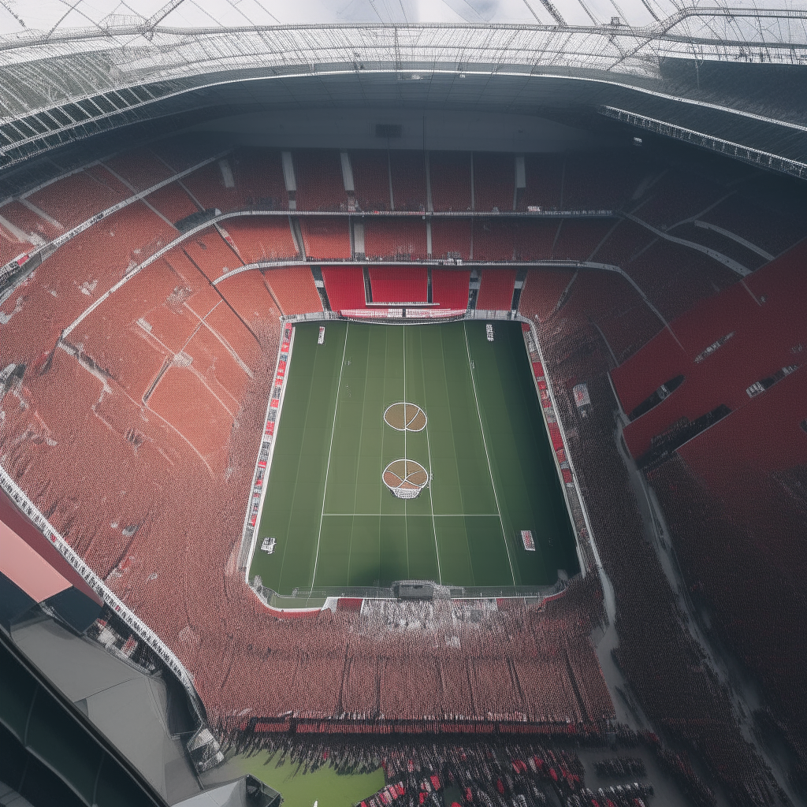
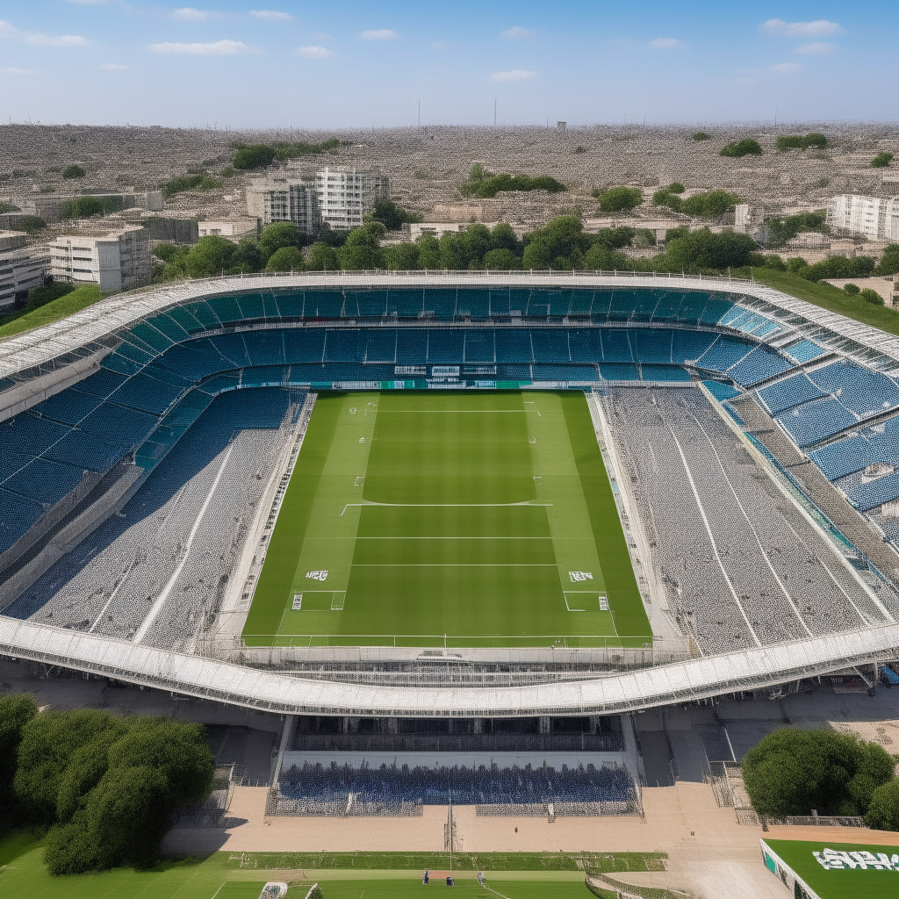

Fotos de los estadios
Sevilla
Historia del campo:
El Estadio Ramón Sánchez-Pizjuán es un recinto deportivo propiedad del Sevilla Fútbol Club, ubicado en pleno barrio de Nervión de Sevilla, España. Se inauguró el 7 de septiembre de 1958 y su aforo actualmente es de 43.864 espectadores. El nombre del estadio es en homenaje al ilustre expresidente del club, Ramón Sánchez-Pizjuán para partidos internacionales el aforo es de 41.000 espectadores

Betis
Histora del campo:
El Estadio Benito Villamarín es un recinto deportivo propiedad del Real Betis Balompié, ubicado en la avenida de la Palmera del barrio de Heliópolis de Sevilla, España. Se inauguró el 17 de marzo de 1929 y su aforo actualmente es de 60 721 espectadores, que lo sitúa como el mayor estadio de Andalucía y el cuarto más grande de España.
 Back